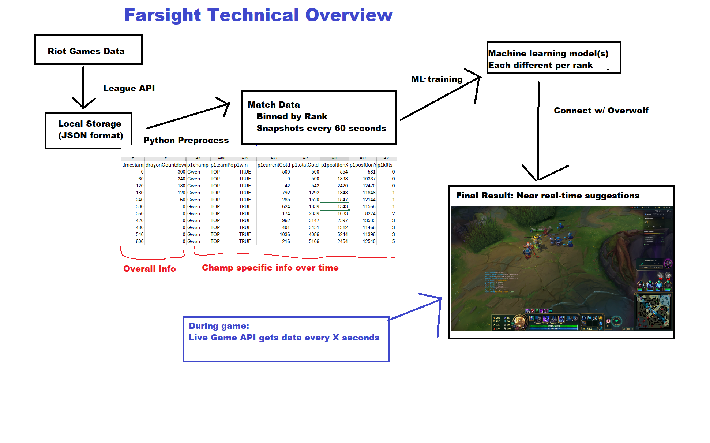

Mockups


AI-Powered Gank Prediction & Macro Advisor for League of Legends
Farsight is a League of Legends Overwolf overlay that helps players make better decisions in real time using two AI-powered systems:
Gank Prediction — An LSTM neural network analyzes the current game state to predict gank risk for each player during laning phase, giving you advance warning with visual indicators and sound cues.
Action Advisor — A win rate prediction model evaluates your macro options — push for a plate, rotate for dragon, back and buy — and shows the estimated win rate impact of each decision so you can choose with confidence.
All inference runs locally on your machine. No data is sent to any server.
Farsight is in beta and actively being used in live games. The Overwolf overlay, gank prediction model, action advisor, and sound cues are all functional. Post-game review lets you replay the predictions from your last match.
We are currently working on expanding the training dataset, refining model accuracy across rank tiers, and developing itemization suggestions.
Match data and timelines are queried from the Riot API via Python scripts and stored locally in JSON format. This data is pre-processed into 60-second interval snapshots — reconstructing per-player state (items, gold, positions, objective timers, turret status) at each point in the match.
Data is segregated by rank, as information from Challenger games is not useful for predicting outcomes in Iron rank games. Each tier gets its own training data and models.
Farsight uses multiple ML models working together:
All models are exported to ONNX format and run locally via ONNX Runtime Web. Web-optimized models use sharded weights for efficient loading. No inference is done server-side.
Overwolf provides the in-game overlay platform. Game state is read from Riot’s Live Client API (local endpoint at 127.0.0.1:2999), feeding real-time data to the ML models.
The action advisor evaluates relevant macro decisions based on role, lane state, and objective availability — it won’t suggest “rotate for dragon” if dragon was just killed, and top lane won’t see “gank bottom.” Options are displayed with color-coded win rate estimates to help players choose between multiple viable paths.
During laning phase, the gank predictor provides risk indicators with visual icons and sound cues, warning players of incoming danger based on game state patterns.
Note: Farsight never tells the player what to do. It presents multiple options with estimated outcomes to supplement — not replace — player analysis and intuition.
